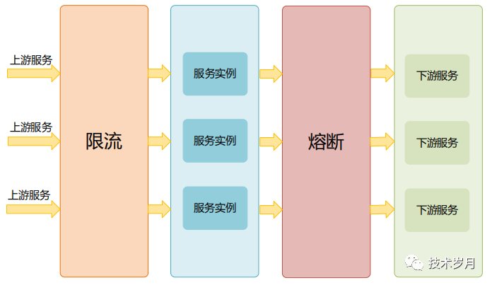
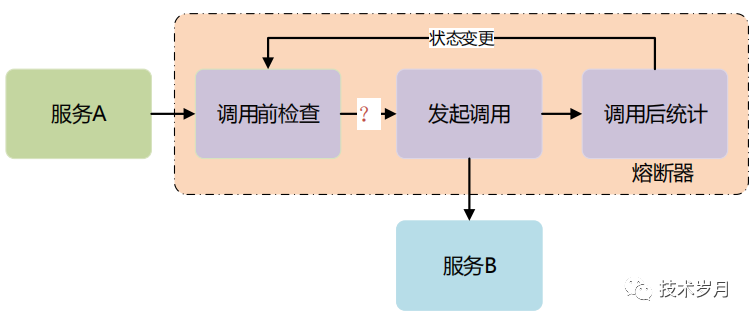
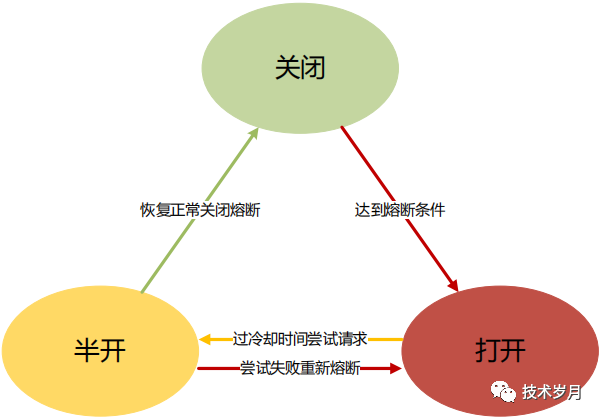

目录
服务保护¶
限流
熔断
降级
划动窗口
熔断¶
熔断模式可以防止应用程序不断地尝试可能超时和失败的服务，能达到应用程序执行而不必等待下游服务修正错误服务。 熔断器模式最牛的是能让应用程序自我诊断下游系统的错误是否已经修正，如果没有，不放量去请求，如果请求成功了，慢慢的增加请求，再次尝试调用。
阿里出的 Sentinel
最多人使用的 Hystrix。
降级¶
降级的本质:
降级就是为了解决资源不足和访问量增加的矛盾
在有限的资源情况下，为了能抗住大量的请求，就需要对系统做出一些牺牲，有点 “弃卒保帅” 的意思。
放弃一些功能，保证整个系统能平稳运行
降级牺牲的是什么:
1. 强一致性变成最终一致性:
大多数的系统是不需要强一致性的。
强一致性就要求多种资源的占用，减少强一致性就能释放更多资源
这也是我们一般利用消息中间件来削峰填谷，变强一致性为最终一致性，也能达到效果
2. 干掉一些次要功能:
停止访问不重要的功能，从而释放出更多的资源
举例来说，比如电商网站，评论功能流量大的时候就能停掉，当然能不直接干掉就别直接，最好能简化流程或者限流最好
3. 简化功能流程:
把一些功能简化掉
降级的注意点:
1. 对业务进行仔细的梳理和分析
哪些是核心流程必须保证的，哪些是可以牺牲的
2. 什么指标下能进行降级
吞吐量、响应时间、失败次数等达到一个阈值才进行降级处理
3. 如何降级
降级最简单的就是在业务代码中配置一个开关或者做成配置中心模式，直接在配置中心上更改配置，推送到相应的服务。
限流¶
限流的目的:
通过对并发访问进行限速。
限流有哪些行为:
1. 拒绝服务
最简单的方式，把多余的请求直接拒绝掉
做的高大上一些，可以根据一定的用户规则进行拒绝策略。
2. 服务降级
降级甚至关掉后台的某些服务。
3. 特权请求
在多租户或者对用户进行分级时，可以考虑让一些特殊的用户有限处理，其他的可以考虑干掉
4. 延时处理
可以利用队列把请求缓存住。削峰填谷。
限流的实现方式:
1. 计数器
最简单的实现方式 ，维护一个计数器，来一个请求计数加一，达到阈值时，直接拒绝请求。
一般实践中用 ngnix + lua + redis 这种方式，redis 存计数值
2. 漏斗模式
流量就像进入漏斗中的水一样，而出去的水和我们系统处理的请求一样，当流量大于漏斗的流出速度，就会出现积水，水对了会溢出。
漏斗很多是用一个队列实现的，当流量过多时，队列会出现积压，队列满了，则开始拒绝请求。
3. 令牌桶
令牌通和漏斗模式很像，主要的区别是增加了一个中间人，
这个中间人按照一定的速率放入一些 token，
然后，处理请求时，需要先拿到 token 才能处理，
如果桶里没有 token 可以获取，则不进行处理。
限流的一些注意点:
限流越早设计越好，架构成型后，不容易加入
限流模块不要成为系统的瓶颈，性能要求高
最好有个开关，可以直接介入
限流发生时，能及时发出通知事件
限流发生时，给用户提供友好的提示
三者的关系:
熔断强调的是服务之间的调用能实现自我恢复的状态；
限流是从系统的流量入口考虑，从进入的流量上进行限制，达到保护系统的作用；
降级，是从系统内部的平级服务或者业务的维度考虑，流量大了，可以干掉一些，保护其他正常使用；
熔断是降级方式的一种；
降级又是限流的一种方式；
三者都是为了通过一定的方式去保护流量过大时，保护系统的手段。
限流是防止上游服务调用量过大导致当前服务被压垮，熔断是预防下游服务出现故障时阻断对下游的调用。

熔断器设计模式是基于 AOP 对所有的请求调用进行拦截，在请求调用前做状态判断是否熔断，请求调用后做计数统计，并根据策略做熔断状态转移。:

熔断器涉及三种状态和四种状态转移:

设计模式思想源自 Microsoft 《Circuit Breaker Pattern》:
在熔断领域中，还有大名鼎鼎的 Hystrix （有 Java 和 Golang 版本）
是 Netflix 开源的限流熔断项目，它支持并发请求，异步上报统计结果提高了并发性
根据服务发现和服务调用的不同，主要有三种方式:
直连模式，服务 A 直接访问 服务 B
集中代理模式，通过引入内网网关做代理，调用时通过网关做转发和负载均衡
还有目前比较火的 服务网格模式 Service Mesh，也叫边车模式 SideCar
【知乎】降级 - 熔断 - 限流 - 傻傻分不清楚: https://zhuanlan.zhihu.com/p/61363959